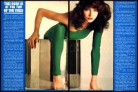

To the Reaching Out (Interviews) Table of Contents

To
the Reaching Out (Interviews) Table of Contents

Article
courtesy of Peter Fitzgerald-Morris
Identification pending.
This Bush Is At The Top Of The Tree!
There's no doubt about it...1978 was really a cracker of a year for Kate Bush, the doctor's daughter from Kent.
At the tender age of 19, the strikingly good looking red-haired Kate shot to stardom in a most amazing manner, surprising probably even the record people, who were behind the tremendous promotional build-up of her singing career.
One minute she was an unknown, likeable girl. The next, she was being hailed as a star. And the nice thing is, she still remains as likeable as ever.
But there is no doubt the girl has changed, as far as her career and her performances are concerned.
It was that one haunting song, "Wuthering Heights" which launched her -- and catapulted her to instant stardom.
She first hit the charts in January 1978 with her strange debut single. The record was inpsired by Emily Bronte's famous novel, and went to No. 1 and stayed there for several weeks.
Her first album followed fairly quickly. Titled The Kick Inside, it was a collection of her own cleverly-penned and original songs. And this, more than anything else, emphasised not only Kate's unusual vocal range, but also her unique presentation of music and the wide emotional depths of the lyrics to her songs.
Once launched, there was no stopping the girl. Her record success continued with "The Man With The Child In His Eyes," which went into the Top 5 in the charts, and then her second album, Lionheart, quickly earned her a gold disc after jetting into the charts on its first week of release.
She has been referred to as having the fragile beauty of a gazelle. It is her stunning looks which undoubtedly add greatly to her vocal performances, putting Kate in a completely different category from most other girl singers.
She studied, at one time, under the master of mime and dance, Lindsay Kemp, and this comes through vividly in most of her on-stage performances.
She has a great feeling for the dramatic effect of a song, not only vocally but physically, as well.
As a child, Kate was encouraged by her parents and family as to the values of self-expression. By the time she was eleven, she had taught herself to play the piano and had written her first songs.
When she was 16, she met David Gilmour, of the Pink Floyd group, and with his help made her first demo disc. She was signed up on a recording contract by EMI soon afterwards.
But she was always more interested in writing songs than singing them, she admits. As well as incorporating a great deal of mime into her act, she likes to fit in a jigsaw of music, poetry and movement, so that her audiences can relate to her songs on more than one level.
"I'm extremely nervous about stage performances," says Kate. "I've always been slightly worried about my capabilities. When I appeared in pubs, singing, before I was well-known, that was fine. But now, people will expect a certain standard of performance from me."
Her fantastic year of success has been based purely on her success in the recording studios. It has taken her a long time to pluck up the courage to build up her act and go out on the road with a stage show.
Her first British tour, in the Spring of 1979, meant her stage debut at the London Palladium, in April.
It has been said, too, that Kate has worked very hard at creating a public image. At times, she talks in a strage slangy accent -- which is, quite clearly, contradictory to her smooth middle-class upbringing.
"We always encouraged Kate to write songs, but we never thought for a minute it would all turn out as it has done," says Kate's mother, who is still very obviously surprised at her daughter's tremendous success.
Says Kate: "I recall that when I was in the school choir, I couldn't sing high notes at all. I had to teach myself, as a sort of exercise."
Over the years, she has also become a highly accomplished dancer.
Last year, her record success led to her name spreading around the world. Kate's records sold not only throughout Europe but in Japan, Australia, Canada and South Africa.
As well as picking up the Tokyo Music Festical silver prize, and the coveted Dutch Editon Award, she rounded off 1978 by being voted the world's top female singer in a poll by 'Melody Maker' readers.
So it's not surprising that Kate figured heavily in the British Rock and Pop Awards.

To
the Reaching Out (Interviews) Table of Contents
"The pull and the push of it all..." - Kate Bush
Reaching Out
is a
Marvick - Hill
Willker -
Mapes
Fitzgerald-Morris
Grepel - Love-Hounds
Presentation
{kind=link}